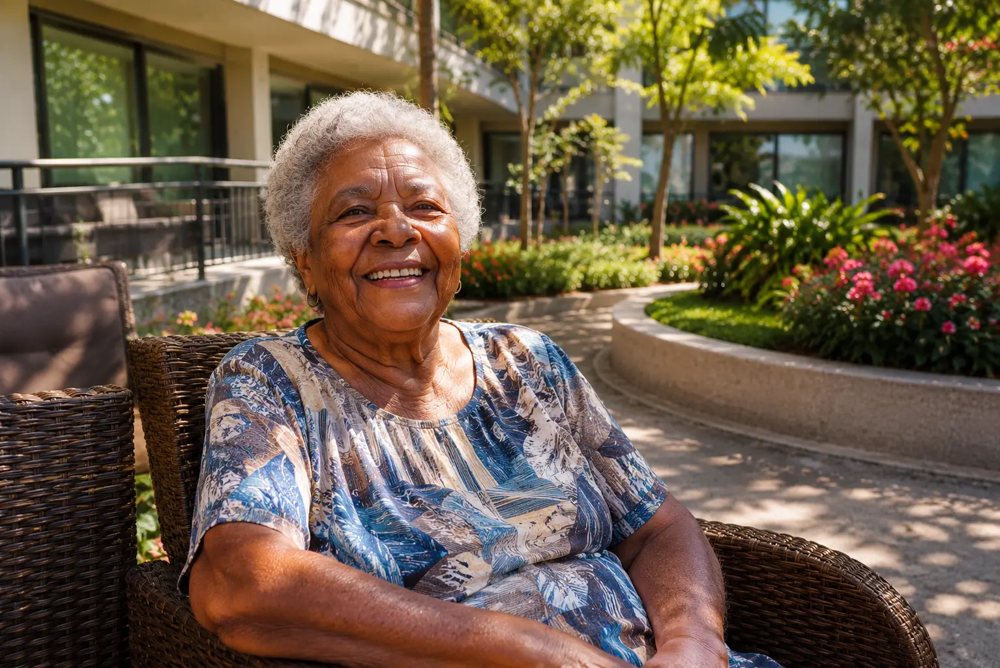

Os nomes mudaram. As estruturas evoluíram. Mas o peso emocional que a palavra "asilo" ainda carrega em muitas famílias brasileiras permanece — e muitas vezes interfere em decisões que deveriam ser tomadas com clareza e leveza.

Quando uma família começa a pesquisar sobre cuidado para um familiar idoso, a primeira barreira raramente é financeira — é emocional. A palavra "asilo" ainda ressoa em muitas conversas com um peso que os termos técnicos e modernos não conseguem desfazer facilmente.
Esse peso tem uma origem. Ele não é irracional. Ele é o resultado de décadas de uma cultura de cuidado que funcionou de forma muito diferente — e que deixou marcas profundas no imaginário coletivo brasileiro.
Este artigo existe para clarear essa distinção — sem julgamentos, sem romantizar a decisão e sem minimizar a complexidade emocional que ela envolve.
Historicamente, os asilos surgiram em um contexto social muito diferente do atual. Eram instituições de amparo — públicas ou filantrópicas — destinadas principalmente a pessoas idosas que não tinham estrutura familiar para receber cuidados em casa.
Naquela realidade, as famílias eram maiores. As mulheres, em sua maioria, não participavam do mercado de trabalho formal. A expectativa de vida era menor, e as doenças crônicas de longa duração — que hoje se tornaram comuns — eram menos frequentes. O cuidado doméstico acontecia de forma natural dentro da estrutura familiar estendida.
Nesse cenário, o asilo era a alternativa para quem não tinha família — ou para famílias que simplesmente não tinham condições de cuidar. Essa associação ficou consolidada culturalmente: asilo como último recurso, como destino de abandono, como o lugar para quem não tem ninguém.
O problema não é a história — é quando ela interfere no presente. A imagem cultural do asilo se formou em uma realidade que não existe mais da mesma forma. Mas o peso emocional desse conceito ainda molda as decisões de muitas famílias brasileiras hoje.
A sociedade brasileira transformou-se profundamente nas últimas décadas. As famílias são menores. As mulheres estão no mercado de trabalho. As pessoas vivem mais — e com isso, vivem também mais anos com algum nível de dependência.
A demência, o Parkinson, a sarcopenia e outras condições ligadas ao envelhecimento tornaram-se progressivamente mais presentes e mais complexas de gerenciar em casa. O cuidado que uma família conseguia absorver naturalmente há algumas gerações exige hoje, em muitos casos, uma estrutura que vai além do que qualquer casa pode oferecer.
Menos filhos, menos cuidadores naturais disponíveis dentro do núcleo familiar.
A principal cuidadora histórica agora tem jornada profissional e vida própria — com toda a justiça.
Vivemos mais — o que significa, em muitos casos, mais anos com dependência crescente.
Demência, Parkinson e condições geriátricas exigem cuidado especializado e contínuo.
Apartamentos menores, rotinas intensas e distâncias maiores entre os membros da família.
A medicina geriátrica evoluiu — e exige equipes, protocolos e ambientes preparados.
Nesse contexto, manter a mesma concepção emocional de cuidado que existia décadas atrás não serve mais à realidade das famílias — e muito menos à realidade da pessoa idosa.
Os nomes que se usa para se referir ao cuidado institucional de idosos evoluíram junto com as estruturas e com a regulamentação do setor. Cada termo carrega uma história — e uma realidade operacional distinta.
O "asilo" é, antes de tudo, um conceito histórico. Surgiu como instituição de amparo público ou filantrópico para idosos sem suporte familiar, em uma época em que o cuidado privado e regulado simplesmente não existia da forma que existe hoje.
Tecnicamente, o termo não é mais utilizado na regulamentação vigente. Mas culturalmente, ele ainda representa para muitas famílias a imagem de um lugar de abandono — uma herança que o setor moderno trabalha para superar com estrutura, qualidade e humanização.
ILPI — Instituição de Longa Permanência para Idosos — é o termo oficial definido pela RDC 502/2021 da Anvisa. É a denominação regulatória que engloba todas as instalações privadas, filantrópicas ou públicas que oferecem moradia, alimentação, cuidado e supervisão para pessoas idosas.
Na prática, "casa de repouso" é como o mercado normalmente chama esse tipo de estabelecimento. O que muda entre um residencial e outro não é o nome — é a estrutura, a qualidade da equipe, os protocolos e o nível de cuidado oferecido.
"Residencial sênior" é um posicionamento mais moderno — que vai além do cuidado básico de uma ILPI tradicional. O foco aqui é qualidade de vida, autonomia, conforto e convivência social. Pode incluir atividades físicas e cognitivas, fisioterapia, programação cultural, gastronomia elaborada e ambientes projetados para bem-estar.
Do ponto de vista regulatório, um residencial sênior ainda é uma ILPI — mas com uma proposta de valor que vai muito além do que a regulamentação mínima exige. É a evolução de um setor que percebeu que envelhecer bem é muito mais do que não estar doente.
A moradia assistida é um modelo inspirado em conceitos europeus e norte-americanos de senior living. Aqui, o foco é preservar ao máximo a independência e a autonomia do idoso — com suporte disponível quando necessário, mas sem a supervisão contínua típica de uma ILPI completa.
É especialmente adequada para pessoas com menor grau de dependência, que desejam manter uma vida ativa, mas com a segurança de ter apoio disponível para as necessidades cotidianas. No Brasil, esse modelo ainda está em expansão — mas representa o futuro do setor.
| Modelo | Público típico | Natureza | Foco principal |
|---|---|---|---|
| Asilo | Idosos sem suporte familiar | Público ou filantrópico (histórico) | Amparo social |
| Casa de repouso / ILPI | Idosos com dependência variável | Privado ou filantrópico regulamentado | Moradia + cuidado + segurança |
| Residencial sênior | Idosos com dependência leve a moderada | Privado, foco em qualidade de vida | Bem-estar, autonomia e convivência |
| Moradia assistida | Idosos com alta autonomia | Privado, modelo independente | Independência com suporte disponível |
A SAFE ILPIS avalia o perfil da pessoa — grau de dependência, necessidades clínicas, rotina e orçamento — e indica qual modelo de cuidado é mais adequado. Gratuitamente para a família.
✓ Sem compromisso · ✓ No seu tempo · ✓ 100% gratuito para famílias
"A decisão de buscar uma estrutura especializada de cuidado não define o amor de uma família por seu familiar. Define apenas a honestidade de reconhecer que o amor, sozinho, não é suficiente para garantir o cuidado que a pessoa precisa."— Equipe SAFE ILPIS
Uma das maiores cargas emocionais que as famílias carregam na busca por um residencial sênior é o medo de serem julgadas. O medo de que a decisão seja lida como abandono — pela sociedade, pelos outros familiares, ou pela própria pessoa idosa.
Mas é importante fazer uma distinção que muda tudo:
Um familiar que visita regularmente, que está presente nas decisões médicas, que conhece a equipe de cuidado e que mantém o vínculo afetivo ativo — esse familiar não está abandonando ninguém. Esse familiar está fazendo uma escolha que pode ser, em muitos casos, a mais responsável e mais amorosa que existe.
Durante gerações, a creche foi vista por muitas famílias como abandono infantil. Hoje é compreendida como parte da estrutura moderna da família — e da vida da criança. Um pai que ama seu filho não para de amá-lo porque um professor ou cuidador qualificado passa parte do dia com ele. A presença afetiva do pai continua sendo insubstituível. A especialização do cuidado não apaga o amor — ela o complementa.
Se uma criança quebra o braço, uma mãe responsável não tenta reduzir a fratura sozinha em casa. Ela busca o profissional certo, acompanha o tratamento, permanece ao lado e cuida com amor — enquanto o médico cuida com técnica. A presença amorosa e o cuidado especializado não são concorrentes. São partes complementares de uma decisão responsável.
O cuidado mais amoroso nem sempre é o cuidado mais conveniente. Às vezes, ele exige a humildade de reconhecer que a pessoa que amamos precisa de uma estrutura que vai além do que conseguimos oferecer — e a coragem de buscar essa estrutura.
A imagem do residencial como "lugar de espera" é uma das mais antigas — e mais incorretas — associações que o setor carrega. Um residencial sênior bem estruturado não é um lugar onde a vida pausa. É um lugar onde ela pode continuar, com mais segurança e, muitas vezes, com mais qualidade do que seria possível em outro arranjo.
A SAFE ILPIS não trabalha com catálogos. Trabalhamos com histórias — e com as necessidades específicas de cada pessoa e cada família.
Dependendo do perfil da pessoa, a estrutura mais adequada pode ser um residencial sênior, uma moradia assistida, programas de socialização, suporte domiciliar complementar ou uma combinação de diferentes recursos. Nossa função é ajudar a identificar o que faz mais sentido — com base em evidências, não em urgência emocional.
Residencial sênior — quando a estrutura domiciliar já não consegue oferecer o cuidado adequado.
Moradia assistida — para idosos com alta autonomia que querem segurança sem perder independência.
Suporte domiciliar — identificação de cuidadoras qualificadas e orientação para famílias que preferem o cuidado em casa.
Programas de socialização — grupos de convivência e atividades que combatem o isolamento sem moradia institucional.
Suporte em saúde mental — identificação de recursos de acompanhamento psicológico para o idoso e para a família.
Preservação do vínculo familiar — orientação para que a transição para qualquer estrutura fortaleça, e não fragmente, o relacionamento afetivo.
A mensagem da SAFE ILPIS é simples: ajudamos famílias a criar estruturas de cuidado mais seguras e mais sustentáveis para o envelhecimento — sem julgamento, sem pressão e com total honestidade sobre o que encontramos em cada opção que indicamos.
Independentemente do modelo — residencial sênior, moradia assistida ou cuidado domiciliar — existem perguntas que ajudam a identificar a estrutura mais adequada para cada situação.
A SAFE ILPIS ajuda famílias a entender o que o seu familiar realmente precisa — e a encontrar a estrutura que oferece exatamente isso. Sem pressa, sem julgamento e sem custo.
Falar com a SAFE ILPIS — é gratuito